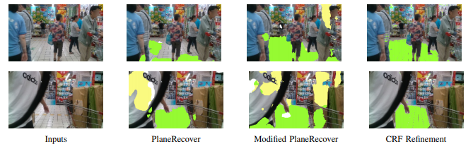
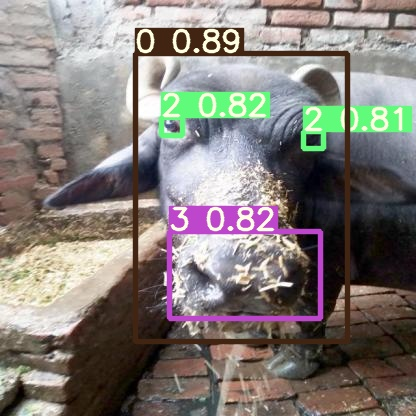
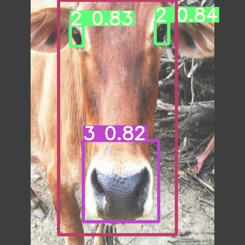
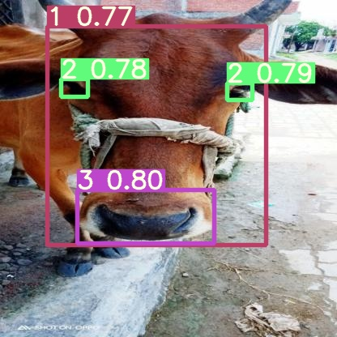
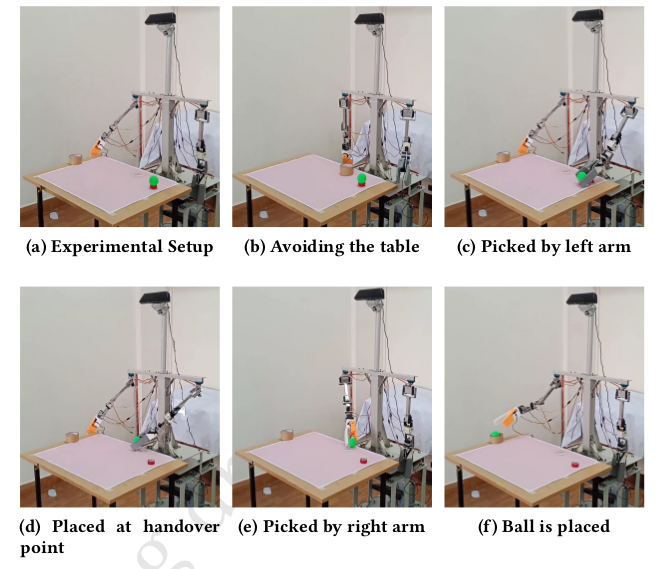
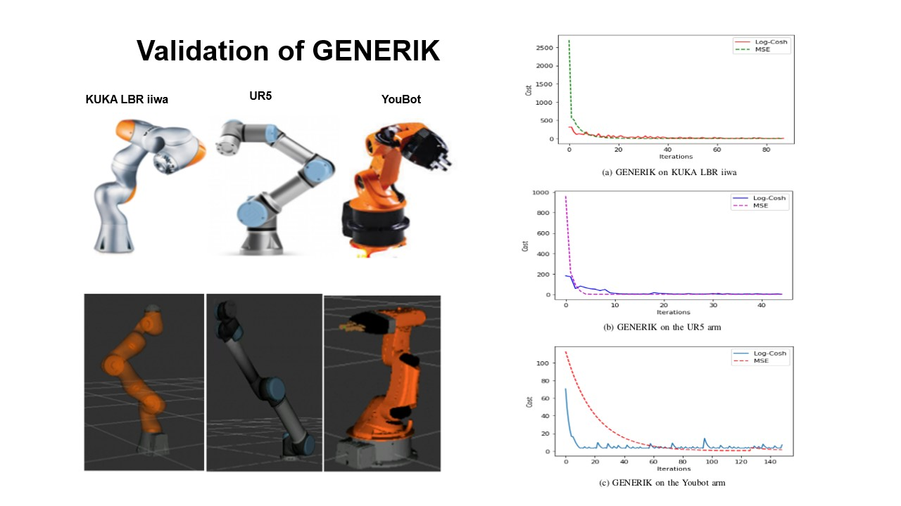

Research Experience
Robotics Research Center
UrbanFly: Uncertainty-Aware Planning for Navigation Amongst High-Rises with Monocular Visual-Inertial SLAM Maps

CCO-VOXEL: Chance Constrained Optimization over Uncertain Voxel-Grid Representation for Safe Trajectory Planning

Rp-VIO:Robust Plane-based Visual-Inertial Odometry for Dynamic Environments

- Trained the PlaneRecover model for 3D planar reconstruction.
- Added a new inter-plane cost function to enhance the model performance.
- Implemented fully connected dense CRF (Conditional Random Fields) for improving segmentation results.
- Benchmarked performance of state of the art VIO algorithms using various open-source datasets
Autonomous Navigation of Aerial Vehicles
- Implementation of online mapping using Octomap and motion planning using FastPlanner and OMPL (Open Motion Planning Library) for a quadrotor in hardware and simulation
- Assembly and offboard control of quadrotors using MAVROS and PX4
NcFlexe IIT Kanpur
CattleNet a system for cattle detection and identification



- Obtained a stable accuracy of 98.0% using the ResNet50 CNN model for the FaceNet architecture
- Used Adaptive Thresholding for Online classification of cattle
- Trained YOLOv5 to detect cattle face, muzzle points, and eyes
Robotics and Embedded Systems Lab BMS College of Engineering
Autonomous Robot Development Open Source Platform(ARDOP)

- Developed the manipulation and perception systems of ARDOP
- Designed and constructed two 6DOF robotic arms from scratch
- Created ROS simulation packages for ARDOP. Used Moveit with KDL (Kinematics and Dynamics Library) and
- Additionally, solved inverse kinematics using the Jacobian pseudoinverse technique
- Implemented using YOLOv3 and perspective camera transform for detection and localization of object in 3D space
- Developed vision, logic, and system integration programs to enable ARDOP to play a game of Tic-Tac-Toe
- Designed and constructed a custom power distribution circuit for the robot
GENERIK:An Objective Function Optimization approach to inverse kinematics

- GENERIK is a novel Inverse Kinematic (IK) solver
- IK is solved as an objective function optimization problem
- Conducted comparative studies choosing MSE (Mean Squared Error) and LogCosh (Logarithm of the Hyperbolic Cosine) as objective functions
- The solver compatible with a variety of robotic manipulators and is capable of providing solutions with accuracy in the millimeter range
- Developed a Generic Navigation system for autonomous navigation for unmanned aerial and ground robots in an indoor environment
- Used Range Flow Technique to determine odometry information from Lidar scan data
- Implemented Gmapping and AMCL for the mapping and localization process respectively
- Implemented Path-Planning using Dijkstra’s Algorithm and DWA (Dynamic-Window Approach) as the global and local planners respectively
- Performed SLAM simulation for a Robotic AGV with Mecanum wheels, using the ROS navigation stack.
- Developed Python scripts for teleoperation of the robot during simulation through Bluetooth communication.
- Implemented Path planning for the AGV
- Hardware construction and control of AGV using BeagleBone Blue